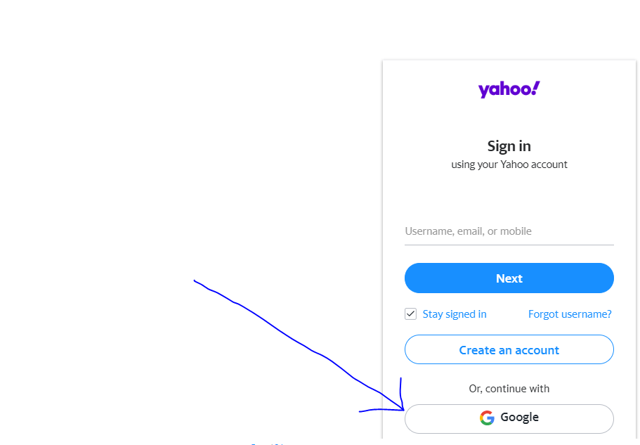

Okay so what your going to need is
Your school chromebook
A school computer with your email that you made for Ms.Shellers Class
Then your going to go to
Yahoo MailBTW on the school computer to set it up
then go sign up then click where it says sign up with google
Then PUT IN THE BUSINESS EMAIL NOT YOUR SCHOOL EMAIL
then it should be running your gmail thru the ymail email engine
then go to the chromebook sign in yahoo with the email and password. I think you have to set up a password on the yahoo on the school computer so go the settings and make sure the password is good.
for the slow people, after you signed in thru google, THEN GO TO
mail.yahoo.com 
Then you should be able to go on your chromebook, and you should be able to access your email from your chromebook.